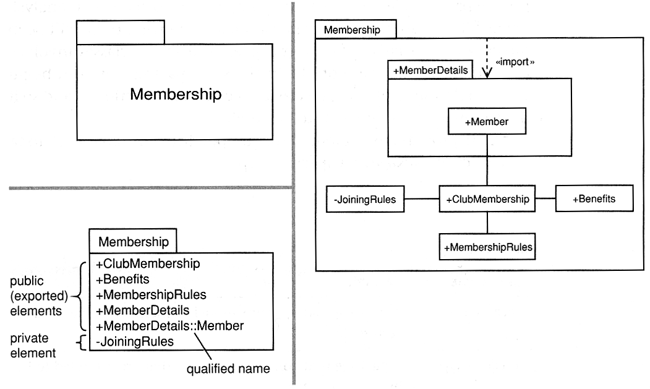
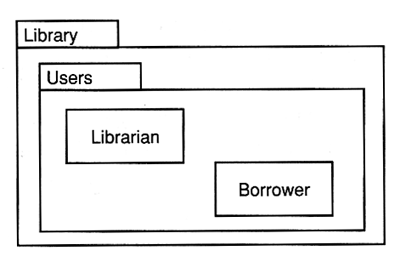
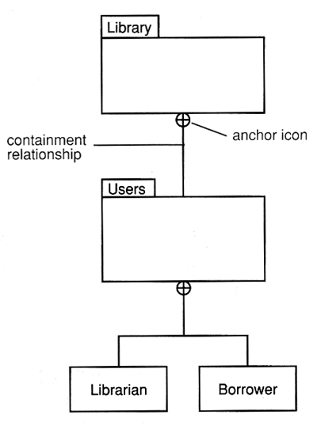
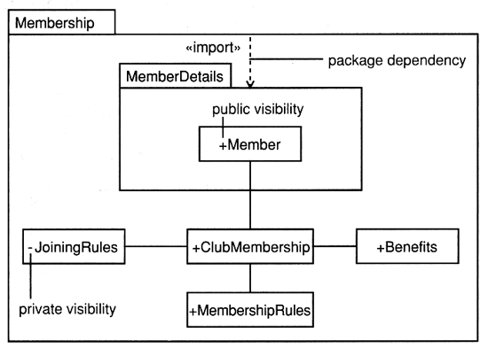
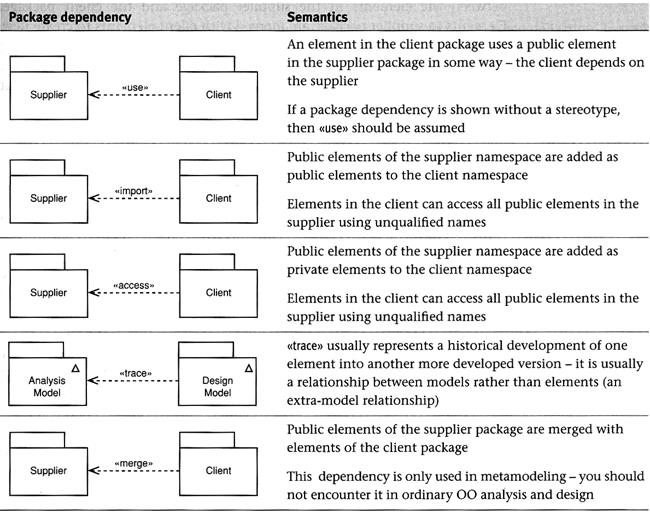
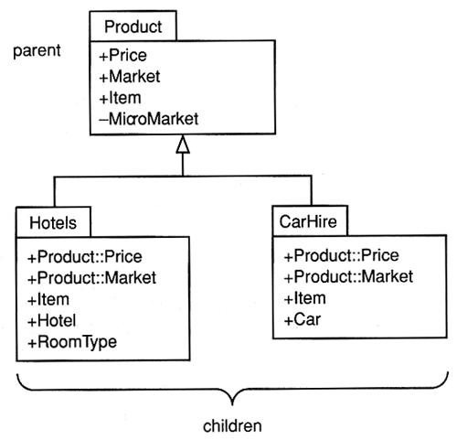
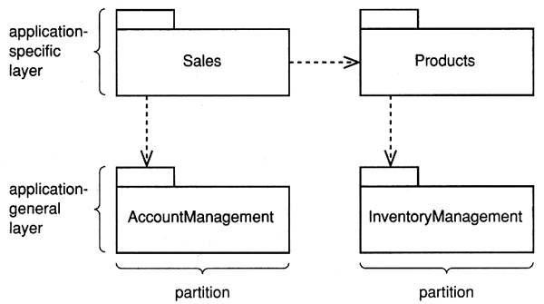
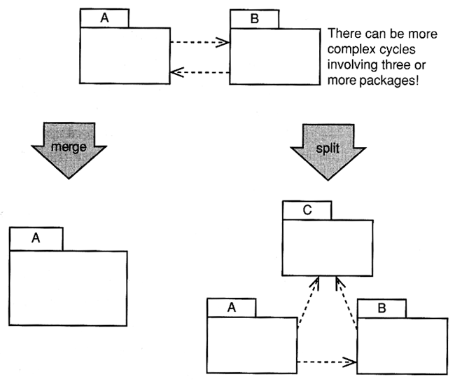
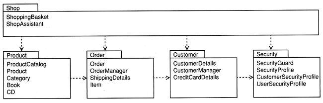

Software Engineering
Analysis PackagesAgenda
What is a package?
The package is the UML mechanism for grouping things.

- The set of UML building blocks consists of things,
relationships, and diagram.
- The package is the UML mechanism for grouping items (including
other packages).
- Each package has its own namespace within which all names must be
unique.
- Every model element is owned by one package.
- The packages form a hierarchy.
Analysis Package
Every model element is owned by one package. The packages form a hierarchy.
- A package can be used to
- provide an encapsulated namespace within which all names must be unique
- group semantically related elements
- define "semantic boundary" of the model
- provide units for parallel working and configuration management
- Analysis packages should contain
Packages and Namespaces
- A package defines what is known as an encapsulated namespace.
- It is a logical boundary within which all the element names
must be unique.
- When an element in one space needs to refer to an element in a
different namespace, it has to specify both the name of the element it
wants and the qualified name or pathname of the element
(compare to file system analogy).
- Qualified name of the class
Librarian in the figure below is
Library::Users::Librarian

Nested Packages

Package Dependencies
A dependency relationship indicates that one package depends in some
way on another.
Visibility determines whether a package element is visible outside the
package.


- <<import>> is transitive
- <<access>> is not
Package Generalization
- Child packages inherit elements from their parent.
- They may override parent elements.
- They may add new elements.

- In architectural analysis, all analysis classes are organized
into a set of cohesive packages, and these are further organized into
partitions and layers as illustrated below.
- Always minimize coupling. You can do in three ways:
- minimize the dependencies between analysis packages
- minimize the number of public elements in each analysis package
- maximize the number of private elements in each analysis package
- Reduction in coupling is one of the most important considerations in
architectural analysis because systems that exhibit a high degree of
coupling are typically complex and difficult to maintain.
- You should always try to keep coupling to the necessary minimum.
- As the model deepens into a
design model, so the number of layers
will tend to increase
- In analysis you can just arrange packages into
application-specific and application-general layers.

Cyclic Package Dependencies
- Avoid package cyclic dependencies in the analysis package model.
- Merging two mutually dependent packages is a perfectly valid way of
removing cyclic dependencies.
- A better approach might be to factor the common elements out into a
third package.
- Classes that truly have mutual dependencies (rather than dependencies
that are just a feature of the incompleteness of the model) should normally
live in the same package.

- Look for clusters of classes that form a cohesive unit-have strong
semantic connection.
- Analysis packages are often discovered over a period of time as the
model develops and matures.
- Look for
- cohesive clusters of classes in the class diagram
- inheritance hierarchies
- consider the use case model (cohesive from business perspective)
- After a set of candidate packages has been identified, you should then
attempt to minimize the public members of the package and the dependencies
between the packages by
- moving classes between packages
- adding packages
- removing packages
- The keys to good package structure are high cohesion within a
package and low coupling between packages.
- A package should contain a group of closely related classes.
- Classes are most closely related by inheritance, next by composition, then
by aggregation, association, and finally by dependencies.
- As a rule of thumb, expect to have between four and ten classes per package.
A Package Model from a Simple eCommerce System
